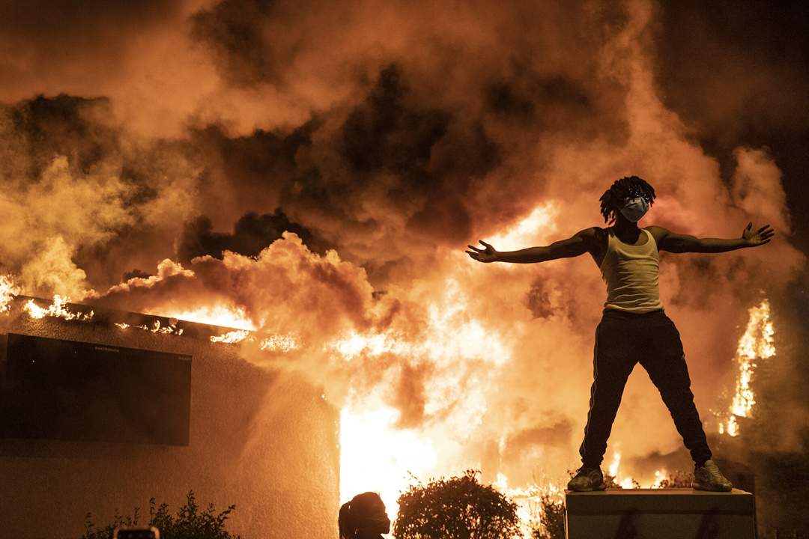

Artefakt Foundation · Calgary + Chicago
Documentary
that stays.
that stays.
artefakt.foundation
Treaty 7 Territory
Treaty 7 Territory
Bearing
Witness
Five photographers. Four presentations. Work made inside communities — not extracted from them. Calgary has never had an institutional home for this argument.
2026 — 2027 · Bearing Witness · Four Presentations
Kiana Hayeri
Afghanistan · Iran · Canada
Sept – Oct 2026
Amber Bracken
Wet'suwet'en · World Press Photo 2022
Feb 2027
Kitra Cahana
Spirituality · Community · Calgary roots
May 2027
Carlos Javier Ortiz + Darcy Padilla
Chicago · San Francisco · Eighteen years
Sept – Oct 2027

Darcy Padilla · 1993 – 2011
Family
Love
Love
Eighteen years. One woman. Addiction, illness, displacement, death. The most sustained documentary commitment in the history of the medium.
San Francisco
1993 – 2011
1993 – 2011
Foundation
Built from inside practice. Not from a university program. Not from a commercial gallery. From what documentary photographers actually need.
Founded by Jon Lowenstein — Guggenheim Fellow, National Geographic Explorer, TED Senior Fellow, founding member of NOOR Images. Thirty years on Chicago's South Side. Calgary, 2024.
Artefakt Foundation · Four Pillars
Witness Long-form documentary
Akademy Fellowship + Academy
Preserve Permanent archive
Sustain Materials reuse
Alberta Society
Est. 2026
Calgary + Chicago
Est. 2026
Calgary + Chicago